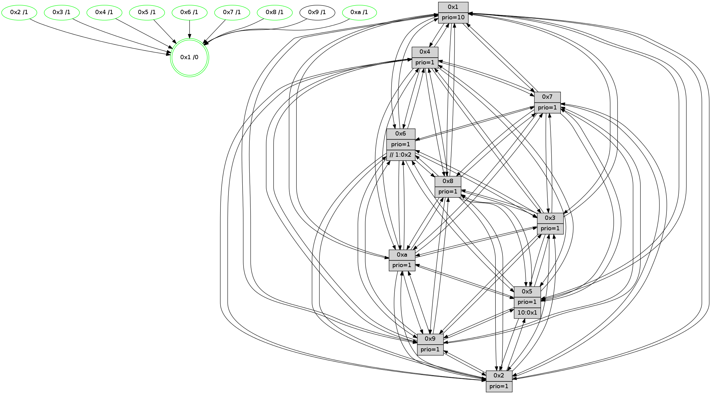

>> << IDX [start] -100 -25 -5 +0 +5 +25 +100 [1495.51304412]
 Previous packets
1490.006114 beacon02(faad) #0 coord=01,02,03,04,05,06,07,0a,09,08 cycle=688.0ms assoc 64 0b b8
1490.016114 beacon03(faad) #0 coord=01,02,03,04,05,06,07,0a,09,08 cycle=688.0ms assoc 64 71 f5
1490.026114 beacon04(faad) #0 coord=01,02,03,04,05,06,07,0a,09,08 cycle=688.0ms assoc 64 06 1f
1490.036115 beacon05(faad) #0 coord=01,02,03,04,05,06,07,0a,09,08 cycle=688.0ms assoc 64 7c 52
1490.046115 beacon06(faad) #0 coord=01,02,03,04,05,06,07,0a,09,08 cycle=688.0ms assoc 64 f2 85
1490.056118 beacon07(faad) #0 coord=01,02,03,04,05,06,07,0a,09,08 cycle=688.0ms assoc 64 88 c8
1490.066119 beacon0a(faad) #0 coord=01,02,03,04,05,06,07,0a,09,08 cycle=688.0ms assoc 64 f9 c3
1490.086121 beacon08(faad) #0 coord=01,02,03,04,05,06,07,0a,09,08 cycle=688.0ms assoc 64 0d 59
1490.097382 [Hello(1): seq=859 sym=4,2,9,5,10,3,8,6,7 sysInfo=coloring-mode-on,ColoringModeRequestCalled stat=4:8,15,5,4/2:1,11,13,6/9:9,2,13,2/5:12,4,3,11/10:3,14,4,8/3:10,11,3,12/8:4,11,0,5/6:6,4,1,3/7:7,13,8,2]
1490.101907 [Hello(5): seq=950 sym=7,6,4,3,1,9,8,10,2 sysInfo=hasWarning stat=7:15,12,9,1/6:6,10,2,0/4:6,3,0,0/3:15,10,3,3/1:3,7,13,0/9:4,1,6,11/8:1,10,15,6/10:15,6,10,9/2:1,4,1,8]
1490.104535 [Hello(3): seq=950 sym=1,7,6,2,4,8,9,10,5 sysInfo=hasWarning stat=1:3,0,8,0/7:1,8,8,15/6:9,15,12,3/2:3,5,1,0/4:6,15,11,14/8:8,8,0,7/9:14,0,1,1/10:14,12,5,5/5:4,13,3,3]
1490.107066 [Hello(2): seq=946 sym=4,5,7,6,3,9,8,10,1 sysInfo=hasWarning stat=4:1,11,4,14/5:0,11,7,4/7:1,10,7,2/6:2,6,3,0/3:2,3,7,2/9:15,3,14,10/8:13,7,15,14/10:15,0,14,11/1:13,4,0,0]
1490.110350 [Color(3) seq=579 @0:0 prio=1]
1490.112118 [Color(2) seq=526 @0:0 prio=1]
1490.118555 [Hello(6): seq=950 sym=3,2,5,4,7,9,8,10,1 sysInfo=hasWarning stat=3:0,0,8,0/2:7,12,3,0/5:4,6,11,6/4:1,7,4,9/7:12,11,1,0/9:4,4,5,11/8:2,1,11,8/10:6,14,14,13/1:6,5,6,1]
1490.121392 [Color(6) seq=582 @0:0 prio=1 >>1.@2,1.@3,1.@4]
1490.123095 [Color(10) seq=539 @0:0 prio=1]
1490.124679 [Color(5) seq=486 @0:0 prio=1 >10.@1,1.@2,1.@3,1.@4]
----------------------------------------------------------------------
1490.784261 beacon01(faad) #0 coord=01,02,03,04,05,06,07,0a,09,08 cycle=688.0ms assoc
-- color-indic=1 64 24 8c
1490.794245 beacon02(faad) #0 coord=01,02,03,04,05,06,07,0a,09,08 cycle=688.0ms assoc 64 b7 bd
1490.804246 beacon03(faad) #0 coord=01,02,03,04,05,06,07,0a,09,08 cycle=688.0ms assoc 64 cd f0
1490.814245 beacon04(faad) #0 coord=01,02,03,04,05,06,07,0a,09,08 cycle=688.0ms assoc 64 ba 1a
1490.824245 beacon05(faad) #0 coord=01,02,03,04,05,06,07,0a,09,08 cycle=688.0ms assoc 64 c0 57
1490.834245 beacon06(faad) #0 coord=01,02,03,04,05,06,07,0a,09,08 cycle=688.0ms assoc 64 4e 80
1490.844245 beacon07(faad) #0 coord=01,02,03,04,05,06,07,0a,09,08 cycle=688.0ms assoc 64 34 cd
1490.854249 beacon0a(faad) #0 coord=01,02,03,04,05,06,07,0a,09,08 cycle=688.0ms assoc 64 45 c6
1490.874253 beacon08(faad) #0 coord=01,02,03,04,05,06,07,0a,09,08 cycle=688.0ms assoc 64 b1 5c
1490.885798 [Hello(10): seq=883 sym=6,2,3,8,7,5,9,4,1 sysInfo=hasWarning stat=6:12,6,8,5/2:9,13,10,1/3:12,3,1,15/8:7,3,12,5/7:1,13,9,10/5:14,1,3,3/9:8,6,9,1/4:3,1,6,3/1:7,11,3,1]
1490.889886 [Hello(4): seq=950 sym=5,8,6,2,3,9,7,10,1 sysInfo=hasWarning stat=5:14,6,2,4/8:5,11,1,0/6:7,1,14,2/2:5,2,5,2/3:4,13,12,0/9:2,15,7,2/7:8,1,4,0/10:9,13,14,14/1:14,5,6,1]
1490.892694 [Color(4) seq=489 @0:0 prio=1]
1490.894131 [Hello(8): seq=894 sym=5,2,3,7,9,6,4,10,1 sysInfo=hasWarning stat=5:15,10,0,3/2:7,9,11,13/3:0,11,15,5/7:10,6,3,0/9:0,6,1,5/6:8,10,12,1/4:6,12,8,2/10:7,13,7,5/1:4,10,6,0]
1490.897535 [Hello(7): seq=950 sym=2,3,5,6,8,4,9,10,1 sysInfo=hasWarning stat=2:11,13,3,5/3:3,7,5,5/5:2,7,5,5/6:6,3,4,13/8:2,3,0,0/4:0,2,1,0/9:6,15,0,2/10:12,5,10,7/1:12,12,1,0]
1490.901638 [Color(7) seq=478 @0:0 prio=1]
1490.903433 [Hello(9): seq=894 sym=2,5,3,4,7,6,8,10,1 sysInfo=hasWarning stat=2:2,2,9,12/5:6,7,1,0/3:15,7,5,6/4:15,2,2,3/7:14,9,3,5/6:1,3,8,1/8:14,9,1,8/10:10,2,2,0/1:6,8,4,1]
1490.907142 [Color(8) seq=549 @0:0 prio=1]
1490.908582 [STC(1) #0.263 tree-change,inconsistent-stability,stable,to-color d=0]
1490.910211 [Color(1) seq=630 @0:0 prio=10]
----------------------------------------------------------------------
1491.572392 beacon01(faad) #0 coord=01,02,03,04,05,06,07,0a,09,08 cycle=688.0ms assoc
-- color-indic=1 64 e0 82
1491.582375 beacon02(faad) #0 coord=01,02,03,04,05,06,07,0a,09,08 cycle=688.0ms assoc 64 73 b3
1491.592373 beacon03(faad) #0 coord=01,02,03,04,05,06,07,0a,09,08 cycle=688.0ms assoc 64 09 fe
1491.602376 beacon04(faad) #0 coord=01,02,03,04,05,06,07,0a,09,08 cycle=688.0ms assoc 64 7e 14
1491.612375 beacon05(faad) #0 coord=01,02,03,04,05,06,07,0a,09,08 cycle=688.0ms assoc 64 04 59
1491.622377 beacon06(faad) #0 coord=01,02,03,04,05,06,07,0a,09,08 cycle=688.0ms assoc 64 8a 8e
1491.632375 beacon07(faad) #0 coord=01,02,03,04,05,06,07,0a,09,08 cycle=688.0ms assoc 64 f0 c3
1491.642380 beacon0a(faad) #0 coord=01,02,03,04,05,06,07,0a,09,08 cycle=688.0ms assoc 64 81 c8
1491.662382 beacon08(faad) #0 coord=01,02,03,04,05,06,07,0a,09,08 cycle=688.0ms assoc 64 75 52
1491.674251 PARSE ERROR************************
Traceback (most recent call last):
File "PacketAnalysis.py", line 167, in showOperaPacket
structPacket = OperaPacketParse.parsePacket(rawPacket)
File "../../pkg-python/HipSens/Core/OperaPacketParse.py", line 461, in parsePacket
return parseHelloMessage(data)
File "../../pkg-python/HipSens/Core/OperaPacketParse.py", line 127, in parseHelloMessage
assert struct.calcsize("H")*len(neighAddrList) == len(linkList)
AssertionError
48 34 01 00 03 5c 00 02 02 12 04 00 02 00 09 00 05 00 0a 00 03 00 08 00 06 00 07 00 53 04 00 84 00 00 4c 12 45 f8 6d c2 2d 29 b3 5d 84 f4 c3 cb 50 b4 31 57 28 d7 4c a2
1491.677325 [STC(8)->1 #0.263 tree-change,inconsistent-stability,stable,to-color d=1]
1491.682186 [STC(5)->1 #0.263 tree-change,inconsistent-stability,stable,to-color d=1]
1491.683531 [Hello(3): seq=951 sym=1,7,6,2,4,8,9,10,5 sysInfo=hasWarning stat=1:4,1,9,0/7:2,9,8,15/6:10,0,12,3/2:3,6,1,0/4:7,0,11,14/8:9,9,0,7/9:15,0,1,1/10:15,13,5,5/5:4,14,3,3]
1491.687330 [STC(9)->1 #0.263 tree-change,inconsistent-stability,to-color d=1]
1491.688644 [Hello(6): seq=951 sym=3,2,5,4,7,9,8,10,1 sysInfo=hasWarning stat=3:0,0,8,0/2:7,12,3,0/5:4,7,11,6/4:2,8,4,9/7:13,12,1,0/9:5,4,5,11/8:3,2,11,8/10:7,15,14,13/1:7,6,7,1]
1491.693070 [Hello(2): seq=947 sym=4,5,7,6,3,9,8,10,1 sysInfo=hasWarning stat=4:2,12,4,14/5:0,12,7,4/7:2,11,7,2/6:3,7,3,0/3:2,3,7,2/9:0,3,14,10/8:14,8,15,14/10:0,1,14,11/1:14,5,1,0]
1491.696353 [STC(3)->1 #0.263 tree-change,inconsistent-stability,stable,to-color d=1]
1491.697795 [STC(2)->1 #0.263 tree-change,inconsistent-stability,stable,to-color d=1]
1491.699390 [TreeStatus(3)-.->1 #0.263 tree-change,inconsistent-stability,stable child=1]
1491.701227 [Color(3) seq=580 @0:0 prio=1]
1491.703158 [STC(10)->1 #0.263 tree-change,inconsistent-stability,stable,to-color d=1]
1491.705478 [Color(5) seq=487 @0:0 prio=1 >10.@1,1.@2,1.@3,1.@4]
1491.708456 [Color(10) seq=540 @0:0 prio=1]
1491.710331 [Color(6) seq=583 @0:0 prio=1 >>1.@2,1.@3,1.@4]
1491.720000 [TreeStatus(2)-.->1 #0.263 tree-change,inconsistent-stability,stable child=1]
1491.722768 [Color(2) seq=527 @0:0 prio=1]
----------------------------------------------------------------------
1492.360522 beacon01(faad) #0 coord=01,02,03,04,05,06,07,0a,09,08 cycle=688.0ms assoc
-- color-indic=1 64 5c 87
1492.370504 beacon02(faad) #0 coord=01,02,03,04,05,06,07,0a,09,08 cycle=688.0ms assoc 64 cf b6
1492.380505 beacon03(faad) #0 coord=01,02,03,04,05,06,07,0a,09,08 cycle=688.0ms assoc 64 b5 fb
1492.390506 beacon04(faad) #0 coord=01,02,03,04,05,06,07,0a,09,08 cycle=688.0ms assoc 64 c2 11
1492.400507 beacon05(faad) #0 coord=01,02,03,04,05,06,07,0a,09,08 cycle=688.0ms assoc 64 b8 5c
1492.410506 beacon06(faad) #0 coord=01,02,03,04,05,06,07,0a,09,08 cycle=688.0ms assoc 64 36 8b
1492.420508 beacon07(faad) #0 coord=01,02,03,04,05,06,07,0a,09,08 cycle=688.0ms assoc 64 4c c6
1492.430509 beacon0a(faad) #0 coord=01,02,03,04,05,06,07,0a,09,08 cycle=688.0ms assoc 64 3d cd
1492.450514 beacon08(faad) #0 coord=01,02,03,04,05,06,07,0a,09,08 cycle=688.0ms assoc 64 c9 57
1492.463958 [Hello(10): seq=884 sym=6,2,3,8,7,5,9,4,1 sysInfo=hasWarning stat=6:12,7,8,5/2:9,14,10,2/3:12,3,1,15/8:8,4,12,5/7:2,14,9,10/5:14,1,3,3/9:9,6,9,1/4:4,2,6,3/1:8,12,4,1]
1492.466968 [Hello(4): seq=951 sym=5,8,6,2,3,9,7,10,1 sysInfo=hasWarning stat=5:14,7,3,4/8:6,12,1,0/6:8,2,15,2/2:6,3,6,3/3:5,14,13,1/9:3,15,8,2/7:9,2,4,0/10:10,14,15,14/1:14,6,7,1]
1492.470431 [Color(4) seq=490 @0:0 prio=1]
1492.471926 [Hello(8): seq=895 sym=5,2,3,7,9,6,4,10,1 sysInfo=hasWarning stat=5:0,11,1,3/2:8,10,12,14/3:1,12,0,6/7:10,6,3,0/9:0,6,2,5/6:9,11,13,1/4:6,12,8,2/10:8,14,8,5/1:4,11,7,0]
1492.475592 [Hello(7): seq=951 sym=2,3,5,6,8,4,9,10,1 sysInfo=hasWarning stat=2:12,14,4,6/3:3,8,6,6/5:2,8,5,5/6:6,4,4,13/8:2,4,0,0/4:0,2,1,0/9:7,15,0,2/10:13,6,11,7/1:12,13,2,0]
1492.478412 [Color(7) seq=479 @0:0 prio=1]
1492.480923 [Color(8) seq=550 @0:0 prio=1]
----------------------------------------------------------------------
1493.148652 beacon01(faad) #0 coord=01,02,03,04,05,06,07,0a,09,08 cycle=688.0ms assoc
-- color-indic=1 64 88 b2
1493.158635 beacon02(faad) #0 coord=01,02,03,04,05,06,07,0a,09,08 cycle=688.0ms assoc 64 1b 83
1493.168634 beacon03(faad) #0 coord=01,02,03,04,05,06,07,0a,09,08 cycle=688.0ms assoc 64 61 ce
1493.178634 beacon04(faad) #0 coord=01,02,03,04,05,06,07,0a,09,08 cycle=688.0ms assoc 64 16 24
1493.188636 beacon05(faad) #0 coord=01,02,03,04,05,06,07,0a,09,08 cycle=688.0ms assoc 64 6c 69
1493.198633 beacon06(faad) #0 coord=01,02,03,04,05,06,07,0a,09,08 cycle=688.0ms assoc 64 e2 be
1493.208636 beacon07(faad) #0 coord=01,02,03,04,05,06,07,0a,09,08 cycle=688.0ms assoc 64 98 f3
1493.218639 beacon0a(faad) #0 coord=01,02,03,04,05,06,07,0a,09,08 cycle=688.0ms assoc 64 e9 f8
1493.238642 beacon08(faad) #0 coord=01,02,03,04,05,06,07,0a,09,08 cycle=688.0ms assoc 64 1d 62
1493.250865 [Hello(1): seq=861 sym=4,2,9,5,10,3,8,6,7 sysInfo=coloring-mode-on,ColoringModeRequestCalled stat=4:8,0,5,4/2:3,13,14,7/9:9,2,14,2/5:14,6,4,11/10:5,0,5,8/3:12,13,4,13/8:5,12,1,5/6:8,6,1,3/7:8,14,8,2]
1493.254977 [Hello(6): seq=952 sym=3,2,5,4,7,9,8,10,1 sysInfo=hasWarning stat=3:0,0,8,0/2:7,13,3,1/5:4,7,11,6/4:3,9,4,9/7:14,13,1,0/9:5,4,5,11/8:4,3,12,8/10:8,15,14,13/1:8,6,7,1]
1493.258830 [Hello(2): seq=948 sym=4,5,7,6,3,9,8,10,1 sysInfo=hasWarning stat=4:3,13,4,14/5:0,12,7,4/7:3,12,7,2/6:3,7,3,0/3:2,3,7,2/9:0,3,14,10/8:15,9,0,14/10:1,1,14,11/1:15,5,1,0]
1493.262272 [Color(2) seq=528 @0:0 prio=1]
1493.263494 [Hello(5): seq=952 sym=7,6,4,3,1,9,8,10,2 sysInfo=hasWarning stat=7:1,14,9,1/6:6,11,2,0/4:8,5,0,0/3:15,10,3,3/1:5,8,14,0/9:6,1,6,11/8:3,12,15,6/10:0,7,10,9/2:1,5,1,9]
1493.266975 [Color(5) seq=488 @0:0 prio=1 >10.@1,1.@2,1.@3,1.@4]
1493.270792 [Hello(3): seq=952 sym=1,7,6,2,4,8,9,10,5 sysInfo=hasWarning stat=1:5,2,9,0/7:3,10,8,15/6:10,1,12,3/2:3,7,1,1/4:7,1,11,14/8:10,10,1,7/9:15,0,1,1/10:0,14,6,5/5:4,15,3,3]
1493.274005 [Color(6) seq=584 @0:0 prio=1 >>1.@2,1.@3,1.@4]
1493.278562 [Color(3) seq=581 @0:0 prio=1]
1493.280094 [Color(10) seq=541 @0:0 prio=1]
----------------------------------------------------------------------
1493.936782 beacon01(faad) #0 coord=01,02,03,04,05,06,07,0a,09,08 cycle=688.0ms assoc
-- color-indic=1 64 34 b7
1493.946765 beacon02(faad) #0 coord=01,02,03,04,05,06,07,0a,09,08 cycle=688.0ms assoc 64 a7 86
1493.956765 beacon03(faad) #0 coord=01,02,03,04,05,06,07,0a,09,08 cycle=688.0ms assoc 64 dd cb
1493.966765 beacon04(faad) #0 coord=01,02,03,04,05,06,07,0a,09,08 cycle=688.0ms assoc 64 aa 21
1493.976765 beacon05(faad) #0 coord=01,02,03,04,05,06,07,0a,09,08 cycle=688.0ms assoc 64 d0 6c
1493.986766 beacon06(faad) #0 coord=01,02,03,04,05,06,07,0a,09,08 cycle=688.0ms assoc 64 5e bb
1493.996765 beacon07(faad) #0 coord=01,02,03,04,05,06,07,0a,09,08 cycle=688.0ms assoc 64 24 f6
1494.006772 beacon0a(faad) #0 coord=01,02,03,04,05,06,07,0a,09,08 cycle=688.0ms assoc 64 55 fd
1494.026773 beacon08(faad) #0 coord=01,02,03,04,05,06,07,0a,09,08 cycle=688.0ms assoc 64 a1 67
1494.038311 [Hello(10): seq=885 sym=6,2,3,8,7,5,9,4,1 sysInfo=hasWarning stat=6:12,7,8,5/2:9,14,10,2/3:12,3,1,15/8:9,5,12,5/7:3,15,9,10/5:14,1,3,3/9:9,6,9,1/4:4,3,6,3/1:9,13,4,1]
1494.042188 [Color(1) seq=632 @0:0 prio=10]
1494.044335 [Hello(4): seq=952 sym=5,8,6,2,3,9,7,10,1 sysInfo=hasWarning stat=5:15,8,3,4/8:7,13,1,0/6:9,3,15,2/2:7,4,6,3/3:6,15,13,1/9:4,15,8,2/7:10,3,4,0/10:10,15,15,14/1:15,6,7,1]
1494.047487 [Hello(7): seq=952 sym=2,3,5,6,8,4,9,10,1 sysInfo=hasWarning stat=2:13,15,4,6/3:4,9,6,6/5:3,9,5,5/6:7,5,4,13/8:2,5,0,0/4:0,2,1,0/9:7,15,0,2/10:14,7,11,7/1:13,13,2,0]
1494.050317 [Color(7) seq=480 @0:0 prio=1]
1494.053189 [Hello(9): seq=896 sym=2,5,3,4,7,6,8,10,1 sysInfo=hasWarning stat=2:4,4,10,13/5:7,9,1,0/3:0,9,6,7/4:0,3,2,3/7:15,10,3,5/6:3,5,9,1/8:15,11,1,8/10:10,4,3,0/1:7,9,5,1]
1494.058679 [Color(8) seq=551 @0:0 prio=1]
----------------------------------------------------------------------
1494.724914 beacon01(faad) #0 coord=01,02,03,04,05,06,07,0a,09,08 cycle=688.0ms assoc
-- color-indic=1 64 f0 b9
1494.734897 beacon02(faad) #0 coord=01,02,03,04,05,06,07,0a,09,08 cycle=688.0ms assoc 64 63 88
1494.744896 beacon03(faad) #0 coord=01,02,03,04,05,06,07,0a,09,08 cycle=688.0ms assoc 64 19 c5
1494.754896 beacon04(faad) #0 coord=01,02,03,04,05,06,07,0a,09,08 cycle=688.0ms assoc 64 6e 2f
1494.764898 beacon05(faad) #0 coord=01,02,03,04,05,06,07,0a,09,08 cycle=688.0ms assoc 64 14 62
1494.774897 beacon06(faad) #0 coord=01,02,03,04,05,06,07,0a,09,08 cycle=688.0ms assoc 64 9a b5
1494.784897 beacon07(faad) #0 coord=01,02,03,04,05,06,07,0a,09,08 cycle=688.0ms assoc 64 e0 f8
1494.794902 beacon0a(faad) #0 coord=01,02,03,04,05,06,07,0a,09,08 cycle=688.0ms assoc 64 91 f3
1494.814903 beacon08(faad) #0 coord=01,02,03,04,05,06,07,0a,09,08 cycle=688.0ms assoc 64 65 69
1494.826442 [Hello(1): seq=862 sym=4,2,9,5,10,3,8,6,7 sysInfo=coloring-mode-on,ColoringModeRequestCalled stat=4:9,0,5,4/2:4,14,14,7/9:10,2,14,2/5:15,7,4,11/10:6,1,5,8/3:13,14,4,13/8:5,13,1,5/6:9,7,1,3/7:9,15,8,2]
1494.829408 [Hello(5): seq=953 sym=7,6,4,3,1,9,8,10,2 sysInfo=hasWarning stat=7:1,14,9,1/6:6,12,2,0/4:9,6,0,0/3:0,11,3,3/1:6,9,14,0/9:7,1,6,11/8:4,13,15,6/10:1,8,10,9/2:1,5,1,9]
1494.832231 [Color(5) seq=489 @0:0 prio=1 >10.@1,1.@2,1.@3,1.@4]
1494.834052 [Color(10) seq=542 @0:0 prio=1]
1494.835479 [STC(1) #0.264 tree-change,inconsistent-stability,stable,to-color d=0]
1494.838018 [Hello(2): seq=949 sym=4,5,7,6,3,9,8,10,1 sysInfo=hasWarning stat=4:4,13,4,14/5:1,13,7,4/7:4,13,7,2/6:3,8,3,0/3:3,4,7,2/9:1,3,14,10/8:15,10,0,14/10:2,2,14,11/1:0,6,1,0]
1494.842128 [Color(2) seq=529 @0:0 prio=1]
1494.843594 [Hello(6): seq=953 sym=3,2,5,4,7,9,8,10,1 sysInfo=hasWarning stat=3:0,1,8,0/2:7,13,3,1/5:4,7,11,6/4:4,9,4,9/7:15,14,1,0/9:6,4,5,11/8:4,4,12,8/10:9,0,14,13/1:9,7,7,1]
1494.848351 [Color(6) seq=585 @0:0 prio=1 >>1.@2,1.@3,1.@4]
1494.853327 [Hello(3): seq=953 sym=1,7,6,2,4,8,9,10,5 sysInfo=hasWarning stat=1:6,3,9,0/7:4,10,8,15/6:10,1,12,3/2:3,7,1,1/4:8,1,11,14/8:11,11,1,7/9:0,0,1,1/10:1,15,6,5/5:4,15,3,3]
1494.857116 [Color(3) seq=582 @0:0 prio=1]